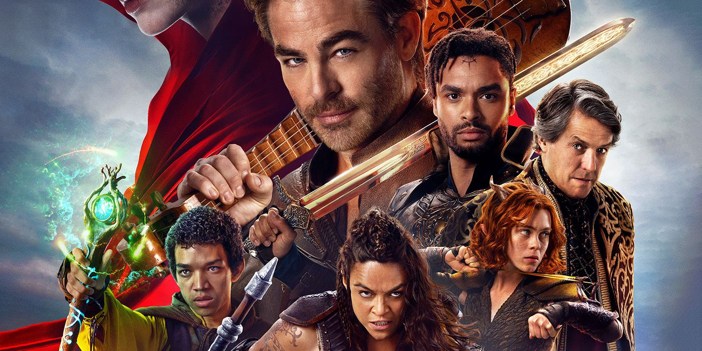

Dungeons & Dragons: Honra Entre Rebeldes
Sinopse
Dungeons & Dragons: Honra Entre Rebeldes é uma aventura épica ambientada em um mundo de fantasia cheio de magia, criaturas míticas e paisagens deslumbrantes. A trama acompanha um grupo de desajustados liderados por Edgin, um carismático bardo e estrategista, que está em busca de uma relíquia mágica poderosa. O grupo inclui Holga, uma feroz bárbara com habilidades de combate incomparáveis, Simon, um mago inseguro mas talentoso, e Doric, uma druidesa que pode se transformar em diversas criaturas. À medida que o grupo viaja por paisagens fantásticas e se infiltra em castelos fortemente protegidos, eles precisam aprender a confiar uns nos outros e trabalhar em equipe, superando diferenças e rivalidades internas. O filme equilibra momentos de ação intensa com cenas de humor e interação entre os personagens, capturando o espírito imprevisível e divertido dos jogos de Dungeons & Dragons.
Informações
Gênero:
Fantasia, Aventura, Comédia, Ação
Diretores:
John Francis Daley, Jonathan M. Goldstein
Duração:
2h 14min
Elenco
Ator/Atriz |
Personagem |
|---|---|
| Chris Pine | Edgin |
| Michelle Rodriguez | Holga |
| Regé-Jean Page | Xenk |
| Justice Smith | Simon |
| Sophia Lillis | Doric |
| Hugh Grant | Forge |
| Chloe Coleman | Kira |
| Daisy Head | Sofina |
| Spencer Wilding | Gorg |